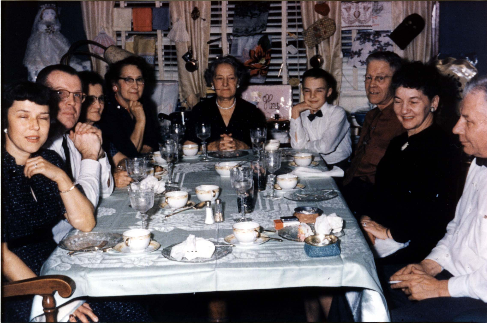

Here's a photograph of the Cook and Rudge families, united for the occasion of my parent's (William Jerome Rudge III and Beverly Anne COOK) marriage. From left to right they are: Ruby nee BREITKREUTZ GRAFFUNDER, her husband Frank GRAFFUNDER, Dorothy nee BREITKREUTZ WATSON, Addie nee BREITKREUTZ CRAPSER, Laura Adell nee BREITKREUTZ COOK, Jack GRAFFUNDER, Ralph Mills COOK, Lena Anne nee WYSS RUDGE and William Jerome RUDGE Jr.